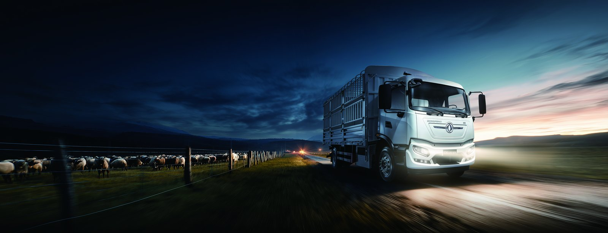

Choosing the right electric truck for Philippine conditions comes down to matching battery capacity, duty cycle and support infrastructure - and the KT3F electric sprinkler truck is built for exactly this kind of work. With a 262 kWh CATL LFP battery, a 250 kW motor and 250 km of certified range, it covers demanding daily duty while cutting energy cost per kilometer by well over half versus diesel. This guide looks at the KT3F through the lens that matters most to fleet buyers in the Philippines, with the KT3F electric sprinkler truck specifications and real operating data throughout, and pointers to the Philippines electric truck market for market-specific context.
Fleet finance has quietly split into two pools: conventional asset finance, available to any truck; and green finance - development-bank credit lines, ESG-linked loans, climate funds and subsidized leasing - available only to zero-emission assets. The KT3F electric sprinkler truck qualifies for the second pool by nature, and the terms difference is material: interest margins commonly one to three percentage points below conventional truck finance, longer tenors, and in some Philippine programs, partial guarantees that ease collateral requirements. For a fleet financing ten trucks at the KT3F's FOB range of $85,000-$110,000, the rate difference alone is worth five to six figures over the loan term. Buyers who still compare truck prices without comparing the finance attached to them are reading only half the quotation. This guide maps the green finance landscape as it actually operates for the Philippines fleets.
The menu has four main courses, and eligibility stacks. Development finance: regional development banks and climate facilities run credit lines through local banks for clean transport - the KT3F with its zero-emission certification qualifies by definition, and these lines carry the cheapest money in most Philippine markets. Green commercial loans: banks building ESG portfolios offer margin discounts on certified zero-emission assets. Sustainability-linked leasing: lessors with their own emissions targets price electric fleets favorably to meet them. And government programs: purchase incentives, interest subsidies or tax preferences for commercial EVs where the Philippines policy provides them - our team confirms the current Philippine position at quotation, because these programs open and change on budget cycles. The practical point: the same sprinkler truck purchase, financed green, typically costs meaningfully less per month than the diesel it replaces - before the fuel saving enters.
Green lending runs on documentation, and the electric truck's paperwork advantage starts at the factory. Lenders' technical reviewers ask for: zero-emission certification and homologation documents - the KT3F ships with ICC/PS marking and full type-approval files; battery warranty terms - the 8-year, 4,500-cycle CATL LFP warranty is the residual-value anchor lenders underwrite against; projected emissions savings - calculated from the fleet's duty data, which our quotation models route by route; and the operating economics - the energy and maintenance case that demonstrates repayment capacity. Fleets that arrive with this pack complete credit review in weeks; fleets that improvise it learn about each requirement one rejection at a time. We assemble the technical half of the pack as standard export support - certification, warranty terms, TCO model and emissions math - because financed deals are the norm in Philippine fleet purchases, not the exception.
A growing share of corporate fleet finance now carries sustainability-linked terms: the interest margin steps down if the borrower hits agreed emissions targets - and steps up if it misses. For a fleet electrifying anyway, these structures are free money: the KT3F fleet's zero tailpipe emissions and telematics-documented energy data satisfy the covenant metrics by construction, and the reporting lenders require comes straight from the truck's own data exports. The structures suit larger Philippine operators best - corporations with sustainability strategies, logistics arms of listed companies, fleets serving multinationals with supply-chain emissions targets. The covenant conversation also reaches the fleet's customers: a shipper with Scope 3 commitments will pay for documented low-emission carriage, which is revenue the diesel fleet cannot offer. Green finance, in other words, works both sides of the P&L.
Where carbon markets operate, the electric fleet's emissions savings become a creditable asset that strengthens the finance case directly. The mechanism: verified reductions against a diesel baseline generate credits; credits sell into compliance or voluntary markets; the revenue services the debt. The KT3F's telematics supplies exactly the metering data verifiers require - energy consumed, kilometers run, baseline comparison - which is why electric fleets monetize carbon more cheaply than almost any other project type. In the Philippines and its trading partners, credit prices and program rules vary, but the direction is consistent: documented zero-emission kilometers have monetary value beyond the fuel saving. Our TCO modeling includes the carbon revenue line where Philippine programs support it - conservatively, because a finance case should work on energy savings alone, with carbon as upside rather than foundation.
The sequence that closes green finance efficiently: first, the fleet's own numbers - current diesel spend, utilization, duty cycles - establishing the repayment capacity case. Second, the asset documentation - the KT3F's certification, warranty and specification pack. Third, the emissions math - modeled savings from your routes, in the verifier-ready format. Fourth, approach the right lenders in order: development-finance conduit banks first for the cheapest money, ESG-focused commercial lenders in parallel, lessors as the alternative structure. Fifth, close with the covenant terms understood - the reporting obligations your telematics will satisfy. We run this sequence with the Philippines buyers as standard practice - the technical pack, the TCO model and the emissions documentation come with the quotation. The Philippines electric truck market page covers Philippine market finance context, and our team has the lender conversation often enough to know what each institution asks first.
| Item | Specification |
|---|---|
| Model / Type | KT3F electric sprinkler truck |
| Battery | CATL LFP, 262 kWh, liquid-cooled |
| Motor | LvKong permanent-magnet, 250 kW peak |
| Certified range | 250 km (laden duty cycle) |
| Charging | CCS2 DC fast charge, 20-80% in about 60-90 min; battery swap option on selected variants (5-6 min) |
| Battery warranty | 8 years / 4,500 full-equivalent cycles |
| FOB price guide | $85,000-$110,000 |
Long-term parts support decides whether an imported truck fleet thrives or stalls. We maintain a structured parts program for the KT3F: a recommended starter stock of high-turnover items - filters, brake components, sensors, contactors, lamps and coolant - sized to fleet count and consigned at delivery; scheduled replenishment by sea for planned maintenance; and air freight dispatch from our Xi'an warehouse for breakdown-critical orders. Every truck ships with a full parts catalog using factory part numbers, so orders are unambiguous. High-voltage components and battery modules move under dangerous-goods-compliant logistics with the documentation customs authorities require. For fleets in the Philippines, we also advise on which wear items can be sourced locally and which should stay factory-genuine - a distinction that protects warranty coverage while controlling cost. The objective is simple: a truck off the road earns nothing, and our parts pipeline is built to keep downtime measured in days, not months.
Structuring the purchase correctly matters as much as choosing the right truck. Standard export terms for the KT3F run on confirmed irrevocable letter of credit or telegraphic transfer with deposit and balance against shipping documents, and we work with buyers' banks across the Philippines to make documentation smooth. For fleet-scale orders, staged payment schedules aligned to production and delivery milestones reduce financing cost, and some buyers layer in export credit or leasing structures from their local market. Buyers should also investigate Philippine green financing programs - development banks and national green funds increasingly offer concessional rates for zero-emission commercial vehicles, which can cut the effective interest cost meaningfully below commercial lending. The FOB range of $85,000-$110,000 for the KT3F should be modeled against these financing options alongside the operating savings, because the right funding structure often improves project economics more than a marginal price negotiation. Our export team supports proforma documentation for bank applications at no charge.
Realistic scheduling prevents the most common fleet electrification failures. A typical KT3F deployment runs five to seven months end to end: production takes 30-60 days depending on configuration and order size; ocean freight to Manila South Harbor adds 25-45 days; customs clearance and homologation steps add two to six weeks depending on Philippine procedures. Running in parallel, the depot charging installation should complete before the trucks land, and driver and technician training should finish during commissioning week. The sequence that works: confirm specifications and sign the contract, start certification paperwork immediately, order chargers at the same time as the trucks, and book training against the vessel arrival date. Fleets that run these tracks in parallel put trucks into revenue service within days of clearance; fleets that run them sequentially lose months. We provide a project timeline template with every fleet quotation and track milestones with the buyer's team throughout.
Ready to electrify your fleet? Contact Shaanxi Fenghan Trading — authorized Dongfeng EV truck exporter. WhatsApp: +86 153 1943 1311 | Email: sales@fenghan-trade.com | dongfengevtrucks.com
🌐 Our Network: Fenghan Trade (SAGMOTO/SHACMAN Truck Export) · heavy duty trucks export China